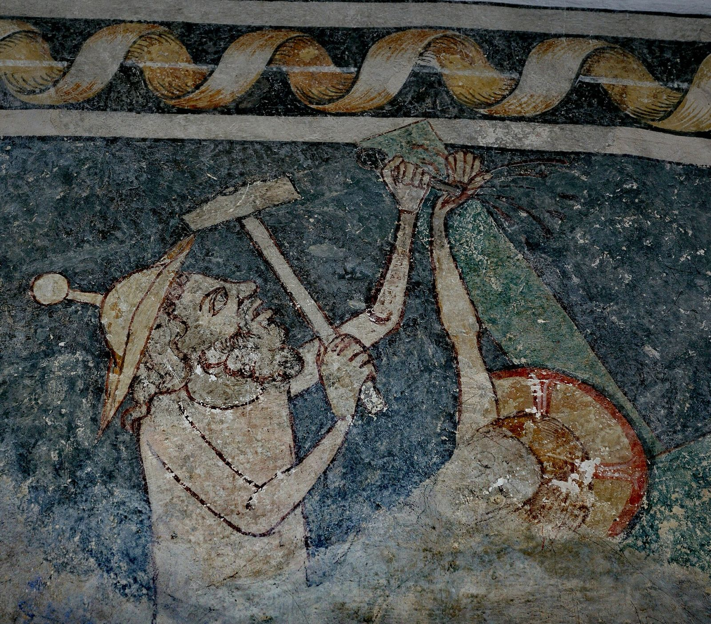

Jew-Hatred
Antijudaism

Antisemitism

Antizionism

The Three Eras of Jew-Hatred
In May 2026, Stop Antizionism made history with the first World Symposium Against Antizionism. In 2027, we are making history again.
The Third Era tells a story no museum has told. This first-of-its-kind exhibition brings the largely overlooked history of antizionism into public view. Through powerful archival documents, historical images, primary sources, multimedia, and survivor testimony, visitors will experience the evolution of Jew-hatred and discover how old libels were transformed, adapted, and given new language for a new era.
Premiering in 2027, The Third Era is more than an exhibition. It is the beginning of a lasting educational initiative designed to travel to museums and universities, reach new generations, and bring a missing chapter of modern Jewish history into the public consciousness.

Antijudaism
For nearly two millennia, hatred of Jews was expressed primarily through the language of religion. In Christian Europe, where faith provided the dominant moral framework, the Jew was cast as the violator of what society held sacred: God, Christ, and Christian truth. Jews were accused of rejecting and killing Christ, desecrating the host, poisoning wells, conspiring against Christians, and murdering Christian children for their blood. These were not simply expressions of prejudice; they were libels that transformed the Jew into a cosmic villain—an enemy not merely of Christians, but of God Himself. Once the Jew was imagined as capable of the most monstrous crimes against the sacred, persecution could be understood not as cruelty, but as moral defense. Expulsions, forced conversions, segregation, massacres, and other forms of persecution could therefore be justified by those carrying them out as acts in service of a higher good. This established a pattern that would survive long after religious authority began to fade: first define the era’s highest virtue, then accuse the Jew of violating it. The language would change. The accusations would change. But the structure of the hatred would endure.
This is what makes Jew-hatred so enduring and so difficult to recognize: it presents itself as a virtuous hatred. The Jew is not merely disliked but cast as a cosmic villain whose extermination becomes a moral act.
Antisemitism
Like antijudaism, which cast the Jew as a violator of society’s religious virtues, the antisemitic era recast the Jew as a violator of the virtues of an increasingly secular society. As European society shifted from a religious to a secular worldview, the moral framework changed—and the image of the Jew changed with it.
Antizionism
The postwar world supplied a new moral language. Empires were collapsing, national liberation movements were overturning colonial rule, and racism had become one of the defining evils of the age. Apartheid came to symbolize legalized racial domination; genocide, humanity’s ultimate crime. Human rights emerged as the era’s defining moral virtue. And once again, the Jew was recast as its enemy. Now reimagined as Zionist, the Jew was accused of embodying the very evils the postwar world had learned to condemn: racism, colonialism, apartheid, and genocide.
Antizionism demonizes the Jew through the Jewish nation-state. Like antijudaism and antisemitism before it, antizionism portrays its Jewish target, Israel, as the embodiment of evil. Today, that evil is defined through the language of human rights. Israel is therefore accused of the era’s worst moral crimes: racism, colonialism, apartheid, genocide, and Nazism.
Although antizionism emerged as a full-scale ideological campaign in the Soviet Union after 1967, its roots appeared much earlier. Antizionist ideas can already be found in Lenin’s writings in 1903 and later in the 1952 show trial of Rudolf Slánský, the Jewish General Secretary of the Communist Party of Czechoslovakia, who was accused of participating in a “Zionist conspiracy” against the state and subsequently executed. Slogans such as “Zionism is racism” and “Israel is committing a genocide” come from the Soviet Union. Few know the history of antizionism.